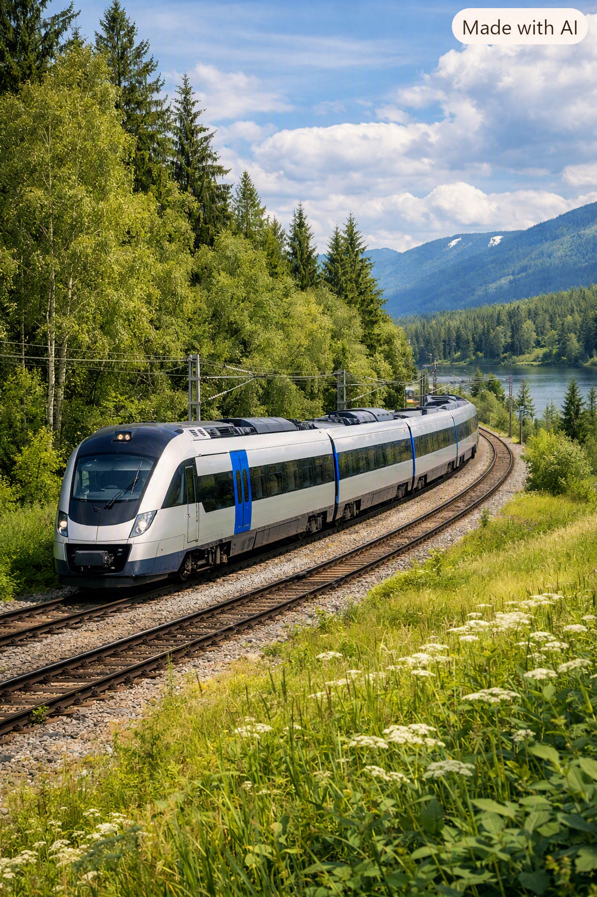

Tåg är ett transportsätt som används för att transportera människor och gods över långa avstånd. De kan vara elektriska eller dieseldrivna och körs på järnvägsspår. Tåg är kända för sin effektivitet och kapacitet att transportera stora mängder passagerare och varor.
Tåg är ett hållbart sätt att resa och har en relativt liten påverkan på miljön. Eftersom tåg kan transportera många människor samtidigt minskar behovet av att använda bil. Detta kan i sin tur bidra till mindre trafik och trängsel, framför allt i större städer. Genom att fler väljer tåget kan även behovet av att bygga ut vägnätet minska.
Byggandet av järnvägar och stationer kan påverka miljön på olika sätt. Därför följs arbetet upp regelbundet för att säkerställa att byggandet sker på ett så miljöanpassat sätt som möjligt. Man kontrollerar bland annat att riktlinjer och rekommendationer för att minska påverkan på omgivningen följs under hela byggprocessen.
Att resa med tåg är ett hållbart alternativ och kan bidra till att minska klimatpåverkan från transporter. Samtidigt kan själva byggandet av järnvägen påverka miljön och leda till utsläpp. Därför arbetar man under hela byggprocessen med att hitta mer klimatsmarta och hållbara lösningar. Genom att planera arbetet och transporterna på ett effektivt sätt kan onödig klimatpåverkan minskas. Man arbetar även kontinuerligt med att utveckla nya lösningar och åtgärder för att göra byggandet så miljövänligt som möjligt.
Tåg har en lång historia som sträcker sig tillbaka till 1800-talet. De första tågen drevs av ångmaskiner och användes främst för att transportera gods och människor över kortare avstånd. Under 1900-talet utvecklades tågtrafiken och elektriska tåg blev allt vanligare, vilket gjorde det möjligt att resa längre sträckor på kortare tid.
Idag finns det olika typer av tåg, inklusive höghastighetståg som kan nå hastigheter på över 300 km/h. Tåg används fortfarande för både person- och godstransporter och är en viktig del av infrastrukturen i många länder.
